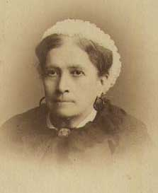

|
The great medical demands of the Civil War accelerated the
development of the nursing profession in America. While the
first official nursing school was not opened until 1872,
many on-the-job courses of training were available in
medical relief and support during the war.
For the Union, Dr. Elizabeth Blackwell and Louisa Lee
Schuyler helped form the Ladies' (later "Woman's") Central
Relief Committee shortly after the war began. The
Committee's many duties included identifying the army's
nursing needs, creating a bureau for examining and
registering nurses, and coordinating medical relief efforts.
The Central later participated in the successful petition
|

Confederate nurse Juliet Opie Hawkins
|
sent to President Lincoln for the United States Sanitary
Commission. The earliest nurses training program in the
country was begun in New York City under the auspices of the
Women's Central. Also, early in the war the Union appointed
Dorothea Dix, a mental health activist, to supervise a
federal office. Dix attempted to set qualifications for
becoming a nurse (to discourage young glory seekers), but
others like New Jersey's Cornelia Hancock and the famed
Clara Barton saw the great need for volunteer care and
bypassed official channels. Dix's power was diminished in
1863, when Surgeon General William Hammond authorized male
surgeons to make staff assignments for nurses.
In the Confederacy, Juliet Opie Hopkins operated a
makeshift hospital in Richmond from the outset of the war,
and the government hired paid female nurses in 1862. Slaves
also participated in menial nursing work, often assisting
the volunteer white nurses who were their owners. The
majority of the nurses (about 60 percent) during the Civil
War were men. Injured and ill soldiers were detailed as
nurses as soon as they mobilized and until they recovered
sufficiently to return to their units. However, some
civilian men volunteered as nurses, such as poet Walt
Whitman, who worked at Armory Square Hospital in New York,
and in hospitals in Washington, D.C.
Women who served as nurses had to overcome many
obstacles, and performed hard work under horrendous
conditions. One barrier was the overwhelming societal
concern with modesty and virtue; for instance, one potential
nurse from Alabama inquired whether "young ladies" would be
expected to dress abdominal wounds or witness amputations.
Mothers who wished to become nurses had to send their
children to relatives, hire housekeepers, or bring their
children along out of economic necessity. Many women were
pressed into nursing duties in or near their homes, which
had become battle sites. Such was the case for the Northern
women of Sharpsburg, Maryland and Gettysburg, Pennsylvania,
and the Southern women of Vicksburg, Mississippi, Atlanta,
Georgia, and countless other places.
Civil War nurses performed a wide range of tasks, many of
them custodial. They constantly strove for cleanliness,
tending hospital wards, washing ambulances, cleaning wounds,
and bathing soldiers. They distributed food and medicine,
and sometimes their duties extended to cooking and laundry.
Women who were slaves, contrabands, or working-class were
relegated exclusively to such menial tasks. A runaway from
South Carolina, Susie King Taylor, who became regimental
laundress for the 33rd United States Colored Troops,
exemplified how roles often expanded; she cleaned weapons,
cared for horses and livestock, nursed soldiers with
smallpox and typhoid, and taught them to read and write.
Nurses often were expected to help the wounded write home
or to read letters aloud when soldiers proved unable. In
fact, nurses sometimes acted as unofficial religious
counselors at the request of dying soldiers, administering
last rites or accepting conversions. Some nurses claimed
the role of recruiter, often convincing convalescent

Union nurse Susie King Taylor
|
soldiers to switch allegiances. Women nurses added a degree
of humanitarianism, refusing to give up on dying soldiers
when doctors declared their injuries untreatable, standing
in the way of amputations when they felt them unnecessary,
or just by providing words and deeds of kindness and
sympathy.
The typical female nurse in the Civil War was white,
middle class, and single or widowed. Women hired as nurses
in the North made $12 per month with a daily ration, and
cooks and laundresses made $6 to $10 per month. Confederate
nurses received better pay, as much as $40 per month, but
had less buying power due to inflation and shortages. In
all, approximately 30,000 women performed nursing work
during the Civil War. By the end of the war, many hundreds
of women, having served four years or more, could claim to
be war veterans. The United States government in 1892
finally granted a monthly pension to nurses (excluding cooks
and laundresses) who could prove at least six months of
service. In the post-bellum period, some of the women with
war experience continued their important nursing roles, or
entered nursing administration or related medical fields.
Many others took their newfound confidence into education,
journalism, social activism, or governmental work.
Source: Joan Waugh, ed., Facts on File Encyclopedia of American
History: Civil War and Reconstruction, 1856 to 1869 (New York: Facts on
File, 2003), 255-256.
|